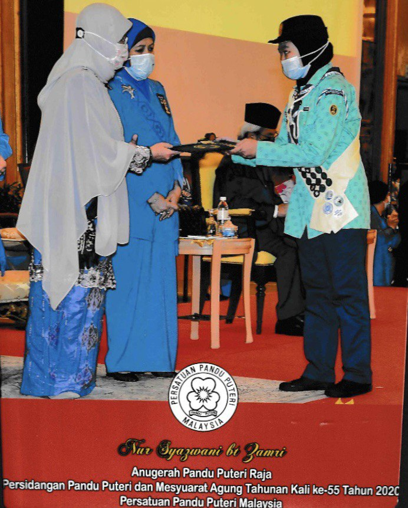
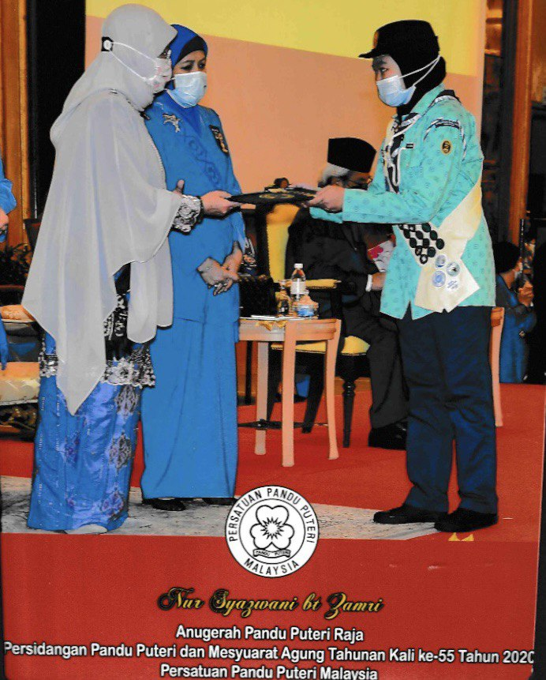

AWARD:
*Matriculation Academic Achievement Award*
The Matriculation Academic Achievement Award is a distinguished recognition presented annually to outstanding matriculation students who have exhibited exemplary academic performance, dedication to their studies, and a commitment to intellectual growth. This award celebrates individuals who have excelled in their matriculation program, showcasing exceptional abilities in various academic disciplines.
Recipients of the Matriculation Academic Achievement Award have not only demonstrated excellence in their coursework but have also displayed qualities such as critical thinking, analytical skills, and a passion for knowledge. These students serve as academic leaders, inspiring their peers to strive for excellence in their educational journey.
This award recognizes the hard work and dedication of matriculation students and aims to encourage a culture of academic excellence within the matriculation community. Recipients receive a certificate of achievement, public acknowledgment, and the honor of being recognized as top performers in their matriculation cohort.
The Matriculation Academic Achievement Award not only highlights the academic achievements of students but also emphasizes the importance of a strong foundation for future educational endeavors, fostering a spirit of intellectual curiosity and lifelong learning.


*SPM Academic Distinction Award*
The SPM Academic Distinction Award is a prestigious recognition bestowed upon outstanding SPM students who have demonstrated exceptional academic performance and a dedication to excellence in their studies. This award celebrates individuals who have not only achieved outstanding results in the SPM examination but have also consistently demonstrated a commitment to learning and intellectual growth.
Recipients of the SPM Academic Distinction Award exhibit a high level of academic curiosity, critical thinking skills, and a passion for continuous learning. They serve as role models within the student community, inspiring their peers to strive for academic excellence.
This award recognizes not only the excellence demonstrated in the SPM examination but also the broader qualities that contribute to a well-rounded, intellectually engaged student. Recipients receive a certificate of distinction, public recognition, and the honor of being acknowledged as top achievers in the SPM cohort.
The SPM Academic Distinction Award serves to encourage and celebrate the academic achievements of SPM students, fostering a culture of excellence and motivating others to pursue their educational goals with dedication and enthusiasm.
 
